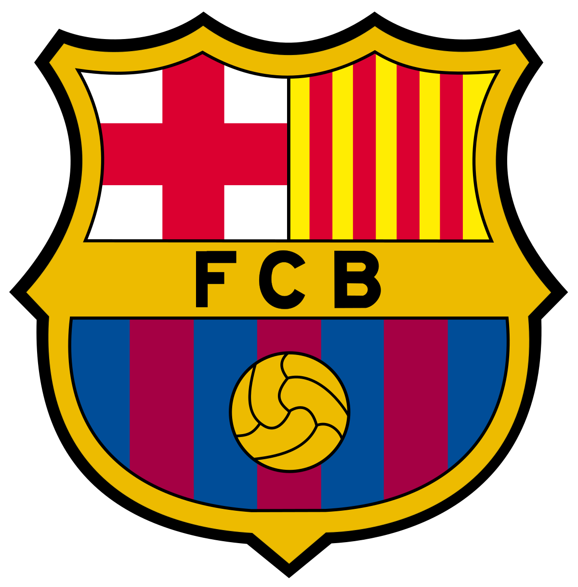

Barcelona

Home
News
Players
LOGIN
NEWS
17 May 24
Barça 41-29 Bada Huesca: Domaća sezona završava impresivnom pobjedom
Fermínov prvi dvoboj povećava njegov ukupni broj u sezoni na deset
16 May 24
Ter Stegen i Gndogan pozvani su za Euro 2024
© Copyright - Drago Šakić